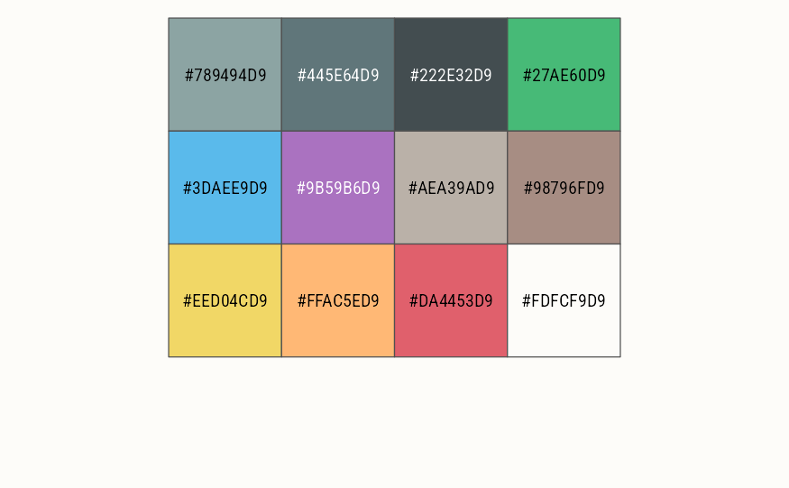
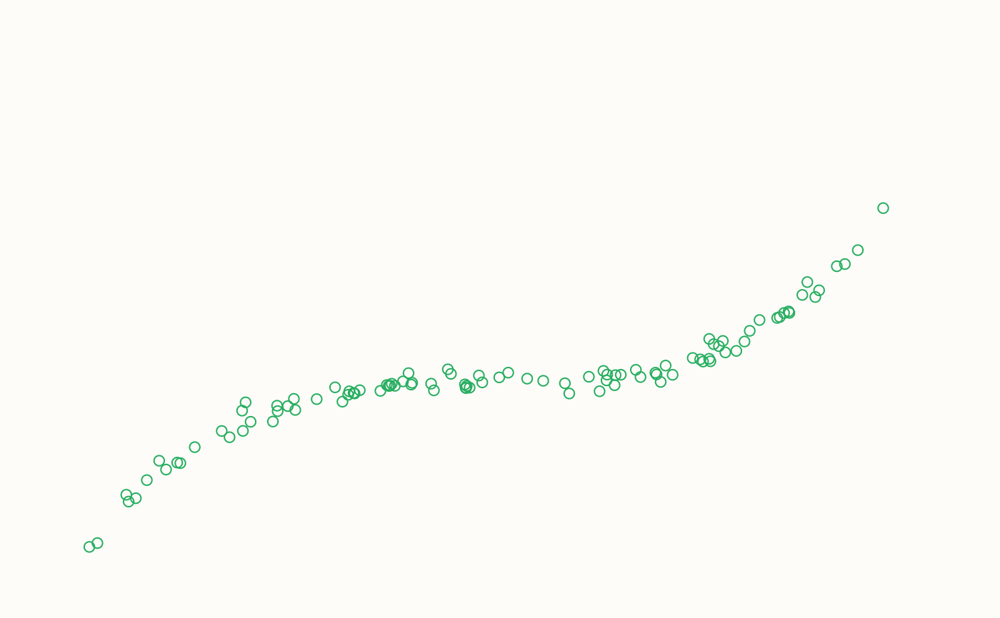
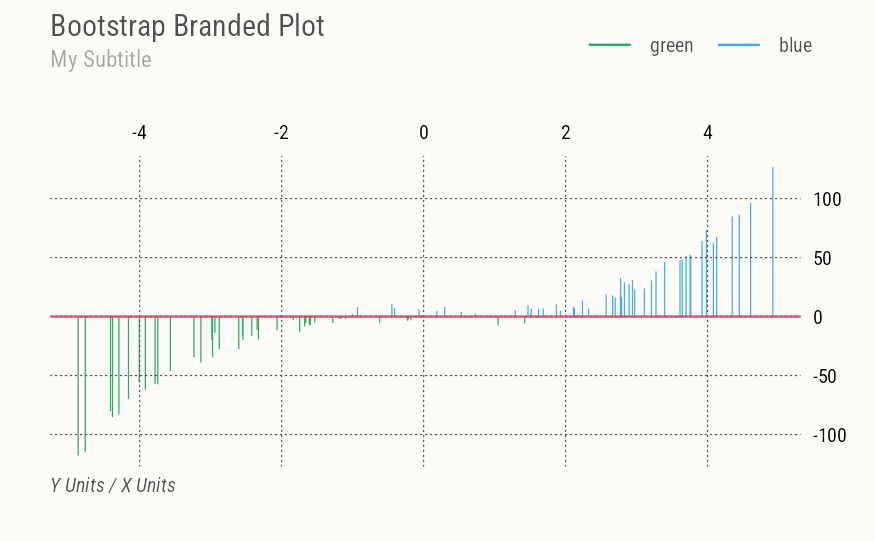
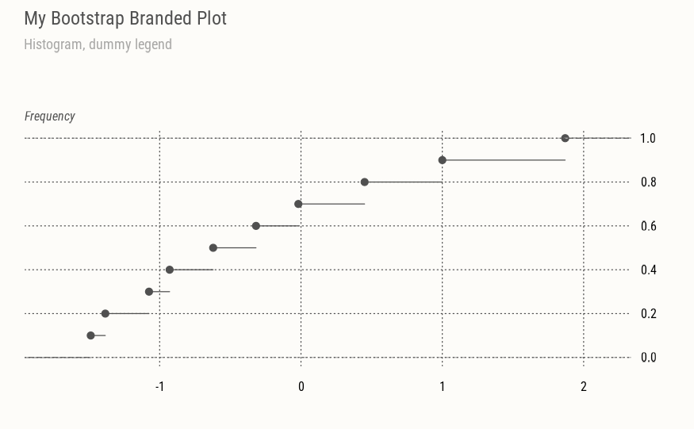
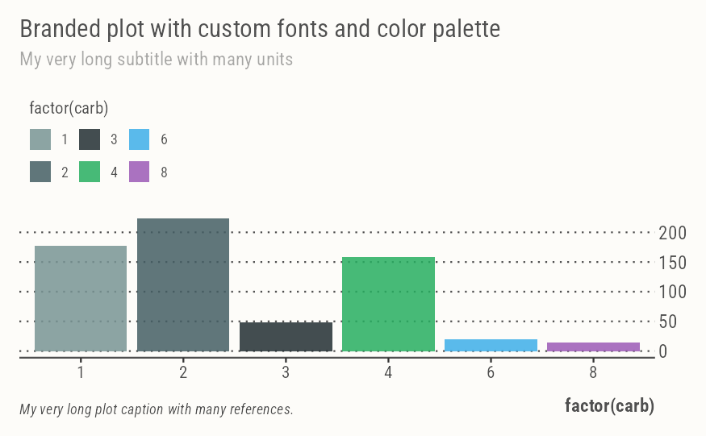
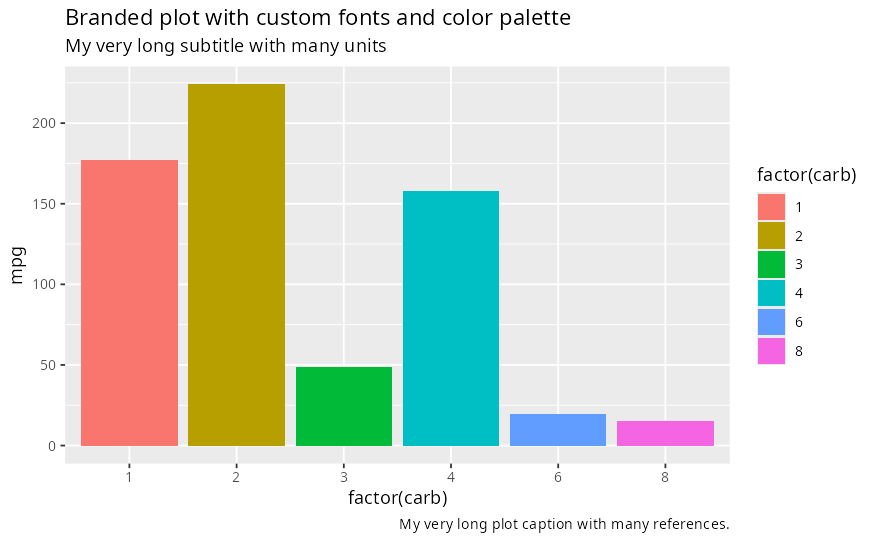

This function is inspired by thematic::thematic_on(). It modifies base R graphics, lattice, and ggplot colors and fonts to match a user-specified Bootstrap theme (using _brand.yml) features. It also modifies the appearance of plot axes and legends (see examples).
Arguments
- ...
Arguments passed on to
brandfilepath to
_brand.ymlconfiguration file, normally this file is auto-detected in the working tree, but may be specified here to swap branding dynamically.fontone of
_brand.ymlfont families (currently onlybase,monospace, orheadings).
Details
Calling brand_on() has a few side effects in that it modifies global par() parameters, ggplot theme and color palette, and it will silently mask generic functions graphics::plot, ggplot2::ggplot() and `graphics::legend()'.
Use in combination with brand_off() to restore the environment to its original state.
Examples
require(ggplot2)
#> Loading required package: ggplot2
brand_on(font="monospace")
#> No `_brand.yml` found in the working tree.
#> Loaded built-in `Mel B. Labs` theme instead.
scales::show_col(pal())

set.seed(1)
x <- runif(100, min = -5, max = 5)
y <- x ^ 3 + rnorm(100, mean = 0, sd = 5)
plot(x, y, col=4)
axes(main="Bootstrap Branded Plot", sub="Scatter plot")

plot(x, y, type="h", col=(y>0)+4)
axes(nx=NULL,
main="Bootstrap Branded Plot", sub="My Subtitle",
xlab="X Units", ylab="Y Units")
abline(h=0, col=pal("red"), lwd=2)
legend(names(pal())[4:5], lty=1, lwd=2, col=4:5)

plot(x, type="h", col=pal())
axes(side=c(1,4),
main="My Bootstrap Branded Plot",
sub="Histogram, dummy legend", ylab="Frequency")
legend(paste("cat", 1:3), fill=pal(1:3))
 # Plot ecdf
plot(ecdf(rnorm(10)))
axes(
main="My Bootstrap Branded Plot",
sub="Histogram, dummy legend",
side=c(1,4), ylab="Frequency", nx=NULL)
# Plot ecdf
plot(ecdf(rnorm(10)))
axes(
main="My Bootstrap Branded Plot",
sub="Histogram, dummy legend",
side=c(1,4), ylab="Frequency", nx=NULL)

ggplot(mtcars, aes(factor(carb), mpg, fill=factor(carb))) +
geom_col() +
labs(
title = "Branded plot with custom fonts and color palette",
subtitle = "My very long subtitle with many units",
caption = "My very long plot caption with many references.")

brand_off()
par("fg")
#> [1] "black"
# Back to default ggplot
ggplot(mtcars, aes(factor(carb), mpg, fill=factor(carb))) +
geom_col() +
labs(
title = "Branded plot with custom fonts and color palette",
subtitle = "My very long subtitle with many units",
caption = "My very long plot caption with many references.")
